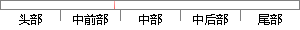

当程序进入系统更新模块后，就可以选择更新系统程序代码或者运行系统。
片段位置图

相似结果
相似片段：使得客户端可以接收到不同操作系统的应用程序运行的... 认证模块, 用于所述第一确定模块为所述终端选择... RAM, 磁碟或者光 盘等各种可以存储程序代码的介质...
| 标题 | 《专利WO2011127860A2 - 启动应用的方法、服务器和系统 - Google 专利》 |
| 对比库 | PaperRater云论文库 |
| 网址 | http://www.google.com.hk/patents/WO2011127860A2?cl=zh&hl=zh-CN |
| 相似率 | 68.97% （轻度抄袭） |
※ 片段修改建议 ※
近似词参考：- 就可以：就能够 就能
- 系统：体系
- 程序：法式 步伐
- 或者：或 大概
系统自动生成语句： 当法式进入体系更新模块后，就能够选择更新体系法式代码或运行体系。
注：本片段修改建议为系统自动生成，仅供参考。